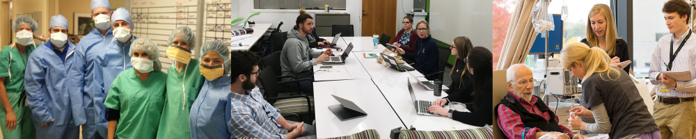

Work Experience

Carolyn has been a Healthcare Operations Analyst at the Center for Healthcare Engineering and Patient Safety (CHEPS) since September 2019. Through the program, she's been able to work on projects such as improving eye care access for veterans, scheduling residents efficently during the time of COVID, and improving the appointment making process for patients with Chronic Liver disease.
